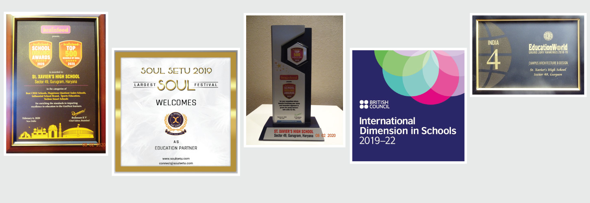

ST.Xaveir's school
Welcome to the Official Website for St. Xaviers High School. St. Xavier’s was established in 1869 by the Jesuits in the neo-gothic building it occupies to this day. Fragments of its history are visible in the corridors of the primary section in the form of stuffed hunted animals shot by priests during the British Raj. This collection is almost like a museum and second only to the BNHS section at the Prince of Wales Museum, Rumbas. Notable among these is the butterfly and bird collection on the first floor and the stuffed tiger on the third floor. The tiger was donated by the Maharaja of Vanzra, Gujrat who was an ex-student of the school. The butterfly and bird collection is the work of Brother Navarro, a Spanish Jesuit and a naturalist who was associated with the school. At one corner of the primary quadrangle a section of a ship’s propeller which landed there at the time of the Bombay Harbour Explosion of 1944.
Campus life

Objective In any college, the Canteen holds a very important place. This is the place, which is important not only for food but for making some of the best memories of college life.As many students come from distant places, it is essential for the students to have nutritious food and refreshments at affordable prices so as to participate in the daily academic activities actively. The college canteen plays an important role in this regard by catering the daily requirements of students and staff members. Providing wholesome and quality food at reasonable price. Creating an attractive and different menu to cater the nutritional needs of the students from different parts of the country. Developing good and healthy food habits among students. Maintaining a good ambience and good aesthetics of the canteen. Vision To facilitate hygienic and nutritious food at reasonably priced merchandise and services essential to their comfort and well-being. Functions of the Canteen The canteen is primarily responsible for serving nutritious and hygienic food to the students and staff. It also serves meals to the students residing in the campus. The Canteen serves the students in three different places. (Ground Floor, Terrace and near B. Ed Dept.).The main canteen is open on working days from 6.30am to 6.30pm.Only one common eating facility (canteen facility) shall be provided in the campus for the students of the College, teaching and non-teaching staff of the College. The management is fully committed to keeping the quality of the canteen for the utmost benefit of all concerned. Functions of the Canteen Committee The committee should ensure a healthy and safe work environment for the canteen staff. The committee should counsel and motivate employees on various duties. Canteen committee should monitor the hygiene and quality of food served in the canteen. The committee should ensure smooth and proper functioning of the canteen on daily basis. The committee plans, controls and evaluate the needs of the canteen for achieving long and short terms goals. The committee should decide the menu and items to be sold in the canteen. The committee should make every effort to make sure that wastage of food is reduced to a minimum.
Achievements
& Achievements
All India Rank 4 in Campus Architecture & Design by Education World – 2018 All India Rank 4 in Best Technology Integration & Rank 1 in Haryana & Gurugram Brainfeed School Excellence Award 2019 Gurugram Leaders – Rank 3 by The Timesof India 3rd consecutive Year – 100% CBSE X results Accredited with IDS, British Council.Whats New
A Message will be send when your child reaches school.


school church
this was established in 1987
As part of the ongoing Parish Racial Equity Review under way at College Church, the History Committee has been discovering and sharing some of the concealed stories of race that are part of the formation of our city, the archdiocese, and our parish, including its relationship to St. Louis University, and the Society of Jesus. Sharing these stories is part of our work to interrupt the systemic racism that persists within our institutions. Highlights of our findings may be seen in a printed brochure available through this link.
Digital technology in teaching and future.

Etra period for sport activities will be taken.

Spotlights will be held after every semester .

school library
this was established in 1980
Fr. Verstraeten Central Library of St. Xavier’s College plays a pivotal role in the teaching-learning process of the College. It is the fulcrum of all academic activities of all UG & PG coursesand research studies. The Library has a rich collection of around 69,000 books, old and rare books, valuable reference books, journals, educational CDs/DVDs and innumerable e-books, e-journals, and other resources for the use of its member
school AUDITORIUM
this was established in 1980
Fr. Albert Huart Hall is a colossal structure of pride for Xavier Business School, St. Xavier’s University, Kolkata. The auditorium with a seating capacity of 500 people, acts as a common ground for students and faculty for organising seminars, conferences, cultural programmes, faculty development programs, workshops etc. Various events and competitions are held in this auditorium throughout the year which gives a variety of exposure to the students in showcasing their talents and in grooming their inborn virtues.
contact us